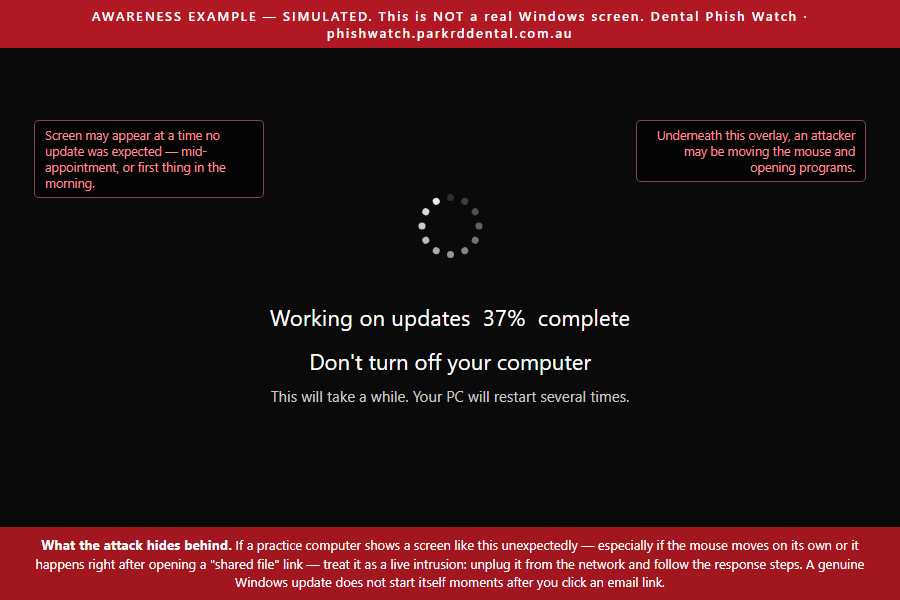
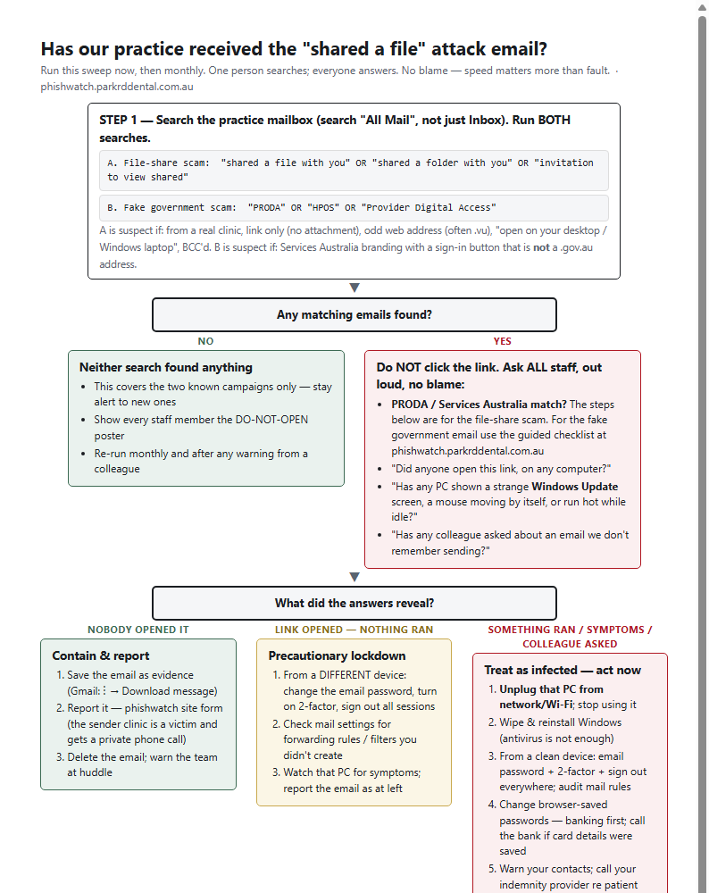
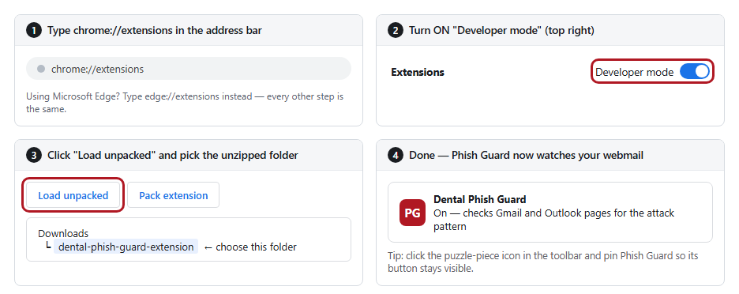
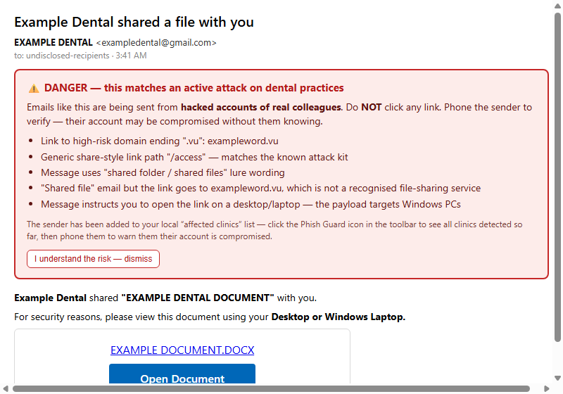

–
practices with compromised accounts identified
| Status | ACTIVE |
|---|---|
| First observed | Mid-2026. Most recent file-share wave 28 July 2026; PRODA/HPOS credential campaign first seen 7 August 2026 |
| Sector affected | Dental practices, Australia-wide (compromised senders identified to date in Victoria and New South Wales) |
| Threat type | Two campaigns: (a) business email compromise → file-share lure → remote-access trojan (Windows); (b) Services Australia impersonation → PRODA/HPOS credential theft |
| Last updated | 7 August 2026 |
| Issued by | A Victorian dental practice affected by this campaign, in coordination with reports from peer clinics. Contact via the reporting form (section 9). |
| Source code | All tooling and this site are open source for independent review: github.com/DentaSuite/dental-phish-guard |
Answer below and you'll get a plain-English checklist for your exact situation — whether you own a practice or work across several, and whether anything has been clicked. Nothing you answer is recorded. (Prefer a full page? Open it separately.)
Two distinct phishing campaigns are currently targeting Australian dental practices. They are described separately throughout this advisory because they behave differently and require different responses. Section 2 sets them side by side so you can identify which one you are holding.
Campaign A propagates between practices through compromised email accounts. After gaining access to a clinic's mailbox, the operator sends "shared a file with you" emails to that clinic's correspondents. Because the messages originate from a genuine, previously trusted account, they pass SPF, DKIM and DMARC authentication and are rarely intercepted by spam filtering.
The linked pages deliver a remote-access trojan for Windows. During installation the malware displays a fake Windows Update screen; an infected machine observed by the issuing practice showed live hands-on-keyboard control by a remote operator. Follow-on activity has included repeat access attempts weeks after initial compromise.

Each recipient practice that is compromised becomes a new distribution point to its own contact network. Compromised senders have been identified in both Victoria (a south-east Melbourne cluster consistent with propagation through local referral relationships) and New South Wales, indicating national reach: any practice that has ever corresponded with an affected clinic may be targeted regardless of state.
Link-scanning services return benign results for campaign A infrastructure: the kit serves a decoy page to automated scanners. A "clean" URL scan is not evidence of safety.
Campaign B, first seen on 7 August 2026, is a different proposition. It impersonates Services Australia, claims the recipient's PRODA account must be re-linked to HPOS, and harvests the credentials entered on a counterfeit sign-in page. It installs nothing, and it does not arrive from a hijacked colleague — it is delivered cold from throwaway attacker domains. A stolen PRODA credential exposes HPOS, and through it Medicare claiming, DVA, the Australian Immunisation Register and patient records.
These are different attacks with different aims and, importantly, different responses. Getting the wrong one costs you: wiping a computer does nothing about a stolen PRODA login, and changing a password does nothing about a machine with an intruder on it. Work out which one you have before acting.
Fake file-share notice that installs malware
Fake Services Australia notice that steals your login

Fig. 2 — Campaign A email received 23 July 2026 (sending practice anonymised). Waves are near-identical: imitation Microsoft share card, “Open Document” button, instruction to open on a desktop computer.
| DOMAIN (do not visit) | OBSERVED |
|---|---|
| avernix.vu/access | 14 Jul 2026 |
| uvanv.vu | early wave |
| xornavo.vu/file | 13 Jul 2026 |
| lornica.vu/dental | 16 Jul 2026 |
| clientesetupdoc.vu/access | 23 Jul 2026 |
| docsecdental.vu/mesh | 23 Jul 2026 |
| dytrix.vu | 24 Jul 2026 |
| bzlvaka.vu/access | 28 Jul 2026 |
| dprvirz.vu (also doc.dprvirz.vu) | 31 Jul 2026 |
A newly registered domain is used for each wave. Detection should rely on the message pattern, not on any specific domain.
First seen 7 August 2026. The email claims your Provider Digital Access (PRODA) account is no longer linked to Health Professional Online Services (HPOS) and must be reconnected, with a “Reconnect PRODA” button. It is formatted as a routine automated notice from Services Australia.
| INDICATOR (do not visit) | ROLE | OBSERVED |
|---|---|---|
| verifications.es/verification/v333/v3 | credential-harvest page | 7 Aug 2026 |
| ghaspert.com | sender domain | 7 Aug 2026 |
| machsselbst.com | sender domain | 7 Aug 2026 |
Figures are compiled from sighting reports and automated detections submitted by participating practices, and update as reports are received. Affected practices are treated as victims: they are notified privately by telephone and are not named. Map positions are rounded to approximately 10 km.
There are two distinct questions: whether a practice computer is infected, and whether the practice mailbox is compromised and being used to attack others. Either can be true without the other, and a compromised mailbox usually produces no symptoms visible to its owner — most affected practices learn of it only when a colleague telephones to ask about a strange email.
Have one person search the practice mailbox — including archived mail, not just the inbox — with:
"shared a file with you" OR "shared a folder with you" OR "invitation to view shared"
Then run a second search for the government-impersonation campaign — the first search will not find it:
"PRODA" OR "HPOS" OR "Provider Digital Access"
Treat a match from the second search as suspect if it carries Services Australia branding and a sign-in button that is not a .gov.au address.
The same phrase searches work in Gmail and Outlook. Suspect matches from the first search carry the indicators in section 2: real clinic as sender, single link with no attachment, unusual domain, an instruction to open on a desktop computer, odd send times. Then ask every staff member, openly and without blame, whether anyone opened such a link and whether any machine has shown the symptoms above. The flowchart below walks a practice through the outcomes; a printable copy is in section 6.

myaccount.google.com/security (devices, recent activity, third-party access); in Gmail settings review Forwarding and POP/IMAP and Filters and blocked addresses; click Details at the bottom-right of the inbox for recent session activity.account.microsoft.com (or Entra sign-in logs, if administered); in Outlook settings review Mail → Rules and Forwarding; administrators can run a message trace for unexpected outbound volume.If any indicator above is present, proceed to section 8 (incident response) and report via section 7. If in doubt, treat the mailbox as compromised — a password change with multi-factor enrolment costs minutes; a missed compromise costs weeks.
.vu. Configurations for Microsoft 365 and Google Workspace are provided in the IT configuration guide.9.9.9.9) so known-malicious domains fail to resolve on all devices.Download the extension zip above, right-click it and choose Extract All (remember where the folder goes — usually Downloads), then:

Nothing, most of the time — it sits quietly. But when an email matching this attack is opened in Gmail or Outlook web, a red warning appears above the message before anyone can click, spelling out exactly why it's dangerous:

Print the poster and the sweep flowchart on A4 and put them where email is actually read — the front desk and the staff room, not the filing cabinet. Open the booklet in Word, type your practice name on the cover, print a copy per staff member, and walk through it at a team meeting — it takes about 15 minutes and reception staff are the most important audience. The IT guide isn't for you: forward it to whoever looks after your computers with the message "please do these and confirm in writing".
Everything above, including this site itself, is published in full at github.com/DentaSuite/dental-phish-guard so you or your IT provider can verify exactly what it does before installing. Detection reports are write-only; submitted data is readable only by the advisory coordinator.
Reports serve two purposes: the practice whose account was compromised is notified privately by telephone, and new infrastructure is added to the indicator list, the browser extension, and takedown requests. Reports are reviewed individually; nothing is published automatically and reporting practices are not named.
The most useful evidence is the original message file. In Gmail: message menu (⋮) → "Download message". Attach it to the pre-filled email this form produces. Do not include patient information.
Use this when someone opened a file-share link and something ran. If instead someone typed credentials into a fake PRODA page, this is the wrong list — go to section 11.
Use this when someone typed a PRODA username, password or verification code into a page reached from an email. The computer does not need wiping — this campaign installs nothing. The exposure is the account and everything HPOS reaches through it.